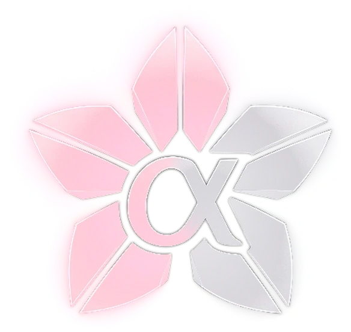

Store
The brand line, from the top: OUKA, then Cherry, then Alpha. Aureum stands apart, in a genre of its own.
Get started
Download the pack, install it on your server, and let Corvus keep every module up to date.
Reference
Every crafting recipe, every dimensional gate, and a tour of what the suite actually adds to the game.
Status
What shipped in each release, what is planned next, and what is still known to be broken.

المستوى الأعلى من Cherry.
ترقّبوا قريباً.